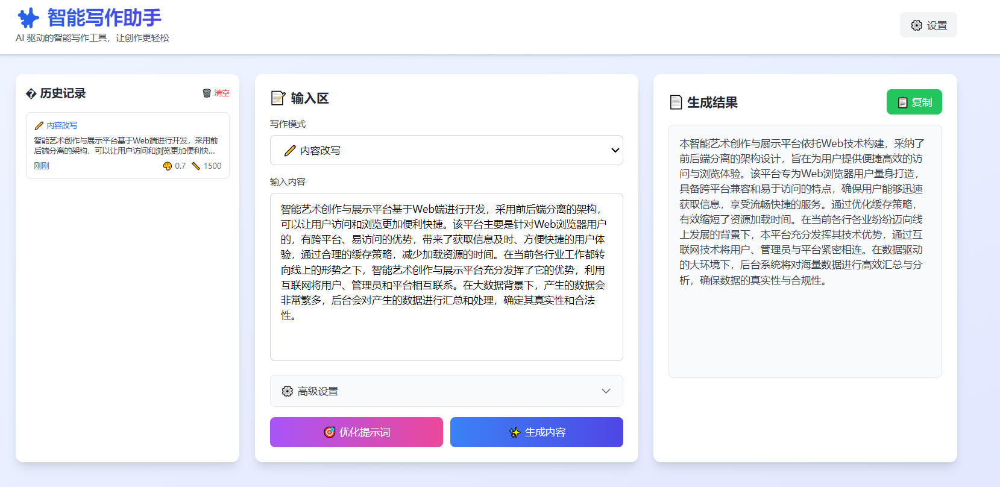

📋 项目简介
基于智谱AI的智能写作辅助工具，支持多种写作模式和流式输出。提供文章续写、内容改写、内容扩展、内容总结、邮件撰写、文案生成等6种专业写作模式，帮助用户提升写作效率和质量。
✨ 核心功能
- 🎯 6种写作模式：文章续写、内容改写、内容扩展、内容总结、邮件撰写、文案生成
- 🤖 提示词优化：AI自动优化用户输入，提升生成质量
- 📊 参数调节：可调节创意度（temperature）和输出长度
- 🌊 流式输出：实时显示生成内容，提升用户体验
- 📝 Markdown渲染：支持Markdown格式的内容展示
- 📚 历史记录：自动保存生成历史，支持查看和删除
- 📋 一键复制：快速复制生成的内容
📖 写作模式说明
📖 文章续写
根据已有内容继续创作，保持风格和逻辑的一致性。适用于小说、故事续写、文章段落补充、创意写作。
✏️ 内容改写
重新组织语言，使内容更加流畅和专业。适用于文章润色、表达优化、风格调整。
📈 内容扩展
在原有基础上增加细节、例子和深度。适用于内容丰富化、增加论据、详细说明。
📋 内容总结
提炼核心观点，形成简洁的摘要。适用于长文总结、要点提取、会议纪要。
📧 邮件撰写
撰写符合商务或日常场景的邮件。适用于商务邮件、工作沟通、客户联系。
💡 文案生成
创作吸引人的营销文案，突出产品特点。适用于产品推广、广告文案、社交媒体。
🛠️ 技术栈
JavaScript
智谱AI API
marked.js
Tailwind CSS
localStorage
🎯 项目亮点
- 集成智谱AI GLM-4-Flash模型，生成质量高
- 流式输出，实时展示生成过程
- 6种专业写作模式，覆盖多种使用场景
- 支持参数调节（创意度、输出长度）
- 历史记录管理，最多保存100条记录
- Markdown渲染，支持富文本展示
- 现代化UI设计，使用Tailwind CSS
- 本地存储，保护用户隐私
⚙️ 参数说明
创意度（Temperature）
- 📊 范围：0.0 - 1.0
- 🎯 默认值：0.7
- 💡 说明：
- 较低值（0.0-0.3）：输出更加确定和保守
- 中等值（0.4-0.7）：平衡创意和准确性
- 较高值（0.8-1.0）：输出更加多样和创意
输出长度（Max Tokens）
- 📊 范围：100 - 2000 tokens
- 🎯 默认值：1500 tokens
- 💡 说明：1 token ≈ 1.5个中文字符
📚 历史记录功能
- ✅ 自动保存每次生成的内容
- ✅ 显示生成时间（相对时间）
- ✅ 显示使用的参数（创意度、长度）
- ✅ 点击加载历史内容和参数
- ✅ 单条删除或批量清空
- ✅ 最多保存100条记录
- ✅ 本地存储，隐私安全
📸 应用截图

主界面 - 左侧历史记录，中间输入区，右侧生成结果，支持多种写作模式